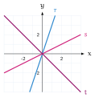
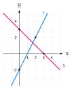
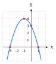

📝 Repaso de la unidad
Actividades de repaso
Escribe tu respuesta y después pulsa «Ver la solución» para corregirla tú. Los puntos dicen el nivel: ● básico, ●●● ampliación.
Haz una tabla de valores y representa en los mismos ejes:
- \(y = 3x\)
- \(y = -\dfrac{x}{2}\)
- \(y = 2\)
Solución
a) Pasa por \((0, 0)\) y \((1, 3)\). b) Pasa por \((0, 0)\) y \((2, -1)\). c) Recta horizontal que pasa por \((0, 2)\).
¿Cómo te ha ido?
¿Cuáles de estas funciones son de proporcionalidad directa? Indica su pendiente.
- \(y = 5x\)
- \(y = x + 5\)
- \(y = -\dfrac{2}{3}x\)
- \(y = \dfrac{x}{4}\)
Solución
a) Sí, \(m = 5\) b) No c) Sí, \(m = -\frac{2}{3}\) d) Sí, \(m = \frac{1}{4}\)
¿Cómo te ha ido?
Ordena de menos a más inclinada estas rectas e indica cuáles son crecientes: \(y = x\), \(y = -4x\), \(y = \frac{1}{3}x\), \(y = 2x\).
Solución
\(y = \frac{1}{3}x\), \(y = x\), \(y = 2x\), \(y = -4x\). Son crecientes todas menos \(y = -4x\).
¿Cómo te ha ido?
Completa la tabla de esta función de proporcionalidad directa y escribe su fórmula:
| \(x\) | 2 | 4 | … | 10 |
| \(y\) | 5 | … | 15 | … |
Solución
\(y = \frac{5}{2}x\); \(y(4) = 10\), \(x = 6\), \(y(10) = 25\)
¿Cómo te ha ido?
Escribe la función de proporcionalidad directa cuya gráfica pasa por el punto:
- \((2, 8)\)
- \((-3, 6)\)
- \((4, -1)\)
- \((5, 2)\)
Solución
a) \(y = 4x\) b) \(y = -2x\) c) \(y = -\frac{1}{4}x\) d) \(y = \frac{2}{5}x\)
¿Cómo te ha ido?
Escribe la ecuación de cada recta:

Solución
\(r\): \(y = 3x\) \(s\): \(y = \frac{1}{2}x\) \(t\): \(y = -x\)
¿Cómo te ha ido?
La gasolina cuesta \(1{,}60\) € el litro. Escribe la función que da el precio según los litros. ¿Cuánto cuestan \(35\) L? ¿Cuántos litros se echan con \(60\) €? ¿Qué significa la pendiente?
Solución
\(y = 1{,}6x\); \(56\) €; \(37{,}5\) L. La pendiente es el precio de un litro.
¿Cómo te ha ido?
Un ciclista va a velocidad constante y recorre \(18\) km en \(45\) minutos. Escribe la distancia, en km, en función del tiempo, en minutos. ¿Cuánto recorre en \(2\) horas?
Solución
\(d = 0{,}4t\); \(48\) km
¿Cómo te ha ido?
Un euro equivale a \(1{,}08\) dólares.
- Escribe la función que pasa euros a dólares y la que pasa dólares a euros.
- ¿Cuántos dólares son \(250\) €? ¿Cuántos euros son \(162\) dólares?
Solución
a) \(d = 1{,}08e\); \(e = \dfrac{d}{1{,}08}\) b) \(270\) dólares; \(150\) €
¿Cómo te ha ido?
¿Es de proporcionalidad directa la función de esta tabla? Si no lo es, cambia un solo valor de \(y\) para que lo sea.
| \(x\) | 1 | 2 | 3 | 4 |
| \(y\) | 3 | 6 | 10 | 12 |
Solución
No: \(\frac{10}{3} \neq 3\). Cambiando \(10\) por \(9\) queda \(y = 3x\).
¿Cómo te ha ido?
En un mapa de Cantabria a escala \(1:50\,000\), cada centímetro equivale a \(0{,}5\) km. Escribe la función que da la distancia real, en km, según la distancia en el mapa, en cm. ¿A qué distancia real están dos pueblos separados \(7{,}4\) cm en el mapa? ¿Cuántos centímetros del mapa son \(12\) km?
Solución
\(y = 0{,}5x\); \(3{,}7\) km; \(24\) cm
¿Cómo te ha ido?
- En \(y = 4x\), ¿qué le pasa a \(y\) si \(x\) se duplica? ¿Y si se triplica?
- ¿Ocurre lo mismo en \(y = 2x + 3\)? Compruébalo con \(x = 1\) y \(x = 2\).
Solución
a) \(y\) también se duplica o se triplica. b) No: \(f(1) = 5\) y \(f(2) = 7\), que no es el doble.
¿Cómo te ha ido?
Indica la pendiente, la ordenada en el origen y si es creciente, decreciente o constante:
- \(y = 3x - 2\)
- \(y = -\dfrac{1}{2}x + 4\)
- \(y = 5\)
- \(y = -4x\)
Solución
a) \(3\); \(-2\); creciente b) \(-\frac{1}{2}\); \(4\); decreciente c) \(0\); \(5\); constante d) \(-4\); \(0\); decreciente
¿Cómo te ha ido?
¿Pertenecen los puntos \((3, 5)\) y \((-2, -4)\) a la recta \(y = 2x - 1\)?
Solución
\((3, 5)\), sí; \((-2, -4)\), no.
¿Cómo te ha ido?
Indica la pendiente y la ordenada en el origen.
- \(y=-2x+5\)
- \(y=\dfrac{3x-1}{2}\)
- \(2x+y=4\)
- \(y=7\)
Solución
a) \(m=-2\), \(n=5\) b) \(m=\frac{3}{2}\), \(n=-\frac{1}{2}\) c) \(m=-2\), \(n=4\) d) \(m=0\), \(n=7\)
¿Cómo te ha ido?
Haz una tabla de valores y representa cada función:
- \(y = x + 2\)
- \(y = -2x + 1\)
- \(y = \dfrac{1}{2}x - 3\)
Solución
a) Pasa por \((0, 2)\) y \((1, 3)\). b) Pasa por \((0, 1)\) y \((1, -1)\). c) Pasa por \((0, -3)\) y \((2, -2)\).
¿Cómo te ha ido?
Dada la función \(f(x) = -3x + 4\), calcula \(f(0)\), \(f(2)\) y \(f(-1)\). ¿Para qué valor de \(x\) es \(f(x) = 10\)?
Solución
\(f(0) = 4\), \(f(2) = -2\), \(f(-1) = 7\); \(x = -2\)
¿Cómo te ha ido?
Halla los puntos de corte con los ejes de cada recta:
- \(y = 2x - 6\)
- \(y = -x + 4\)
- \(y = -3x - 9\)
Solución
a) \((0, -6)\) y \((3, 0)\) b) \((0, 4)\) y \((4, 0)\) c) \((0, -9)\) y \((-3, 0)\)
¿Cómo te ha ido?
Escribe cada recta en la forma \(y = mx + n\) e indica su pendiente y su ordenada en el origen:
- \(3x + y = 7\)
- \(2y - 4x = 6\)
- \(x - 3y = 6\)
Solución
a) \(y = -3x + 7\); \(-3\); \(7\) b) \(y = 2x + 3\); \(2\); \(3\) c) \(y = \frac{1}{3}x - 2\); \(\frac{1}{3}\); \(-2\)
¿Cómo te ha ido?
Representa en los mismos ejes \(y = 2x - 3\) e \(y = -x + 3\). ¿En qué punto se cortan? Compruébalo resolviendo el sistema.
Solución
Se cortan en \((2, 1)\).
¿Cómo te ha ido?
Halla la pendiente, la ordenada en el origen y la ecuación de cada recta:

Solución
\(r\): \(m = 2\), \(n = -2\), \(y = 2x - 2\) \(s\): \(m = -1\), \(n = 3\), \(y = -x + 3\)
¿Cómo te ha ido?
¿Cuáles de estas rectas son paralelas entre sí?
- \(y = 2x + 1\)
- \(y = -2x + 1\)
- \(y = 2x - 5\)
- \(4x - 2y = 3\)
- \(y = 3 - 2x\)
Solución
a), c) y d) tienen pendiente \(2\); b) y e) tienen pendiente \(-2\).
¿Cómo te ha ido?
¿Cuánto debe valer \(k\) para que la recta \(y = kx + 3\) pase por el punto \((2, -5)\)? ¿Es creciente o decreciente?
Solución
\(k = -4\); decreciente
¿Cómo te ha ido?
Representa \(y = 3x - 4\) e \(y = -x + 4\) y halla su punto de corte. Compruébalo igualando las dos expresiones.
Solución
\((2, 2)\)
¿Cómo te ha ido?
- Pasa por el origen y es paralela a \(y = -5x + 2\).
- Es horizontal y pasa por \((3, -2)\).
- Tiene pendiente \(2\) y corta al eje \(X\) en \((4, 0)\).
Solución
a) \(y = -5x\) b) \(y = -2\) c) \(y = 2x - 8\)
¿Cómo te ha ido?
Halla el área del triángulo que forma la recta \(y = -2x + 6\) con los ejes de coordenadas.
Solución
Cortes \((0, 6)\) y \((3, 0)\); área \(9\) u\(^2\)
¿Cómo te ha ido?
Halla la pendiente de la recta que pasa por cada par de puntos:
- \((2, 5)\) y \((6, 13)\)
- \((-1, 4)\) y \((3, -4)\)
- \((0, 3)\) y \((5, 3)\)
Solución
a) \(2\) b) \(-2\) c) \(0\)
¿Cómo te ha ido?
- Tiene pendiente 3 y pasa por \((1, 2)\).
- Tiene pendiente \(-\frac{1}{2}\) y pasa por \((4, 0)\).
- Es horizontal y pasa por \((2, -5)\).
Solución
a) \(y = 3x - 1\) b) \(y = -\frac{1}{2}x + 2\) c) \(y = -5\)
¿Cómo te ha ido?
Halla la pendiente de la recta que pasa por:
- \((1, 2)\) y \((3, 10)\)
- \((-2, 5)\) y \((2, -3)\)
- \((0, 0)\) y \((4, 2)\)
- \((-3, -1)\) y \((1, 7)\)
Solución
a) \(4\) b) \(-2\) c) \(\frac{1}{2}\) d) \(2\)
¿Cómo te ha ido?
Halla la ecuación de la recta que pasa por cada par de puntos:
- \((0, 1)\) y \((2, 7)\)
- \((1, 4)\) y \((3, 0)\)
- \((-1, -1)\) y \((1, 3)\)
- \((2, 3)\) y \((6, 5)\)
Solución
a) \(y = 3x + 1\) b) \(y = -2x + 6\) c) \(y = 2x + 1\) d) \(y = \frac{1}{2}x + 2\)
¿Cómo te ha ido?
- Tiene pendiente \(2\) y pasa por \((-1, 3)\).
- Tiene pendiente \(-3\) y pasa por \((2, -1)\).
- Tiene pendiente \(\frac{1}{3}\) y pasa por \((3, 0)\).
Solución
a) \(y = 2x + 5\) b) \(y = -3x + 5\) c) \(y = \frac{1}{3}x - 1\)
¿Cómo te ha ido?
- Tiene pendiente 3 y ordenada en el origen \(-1\).
- Pasa por \((2,1)\) y \((4,7)\).
- Es paralela a \(y=-2x+1\) y pasa por \((1,4)\).
- Es de proporcionalidad directa y pasa por \((5,-10)\).
Solución
a) \(y=3x-1\) b) \(y=3x-5\) c) \(y=-2x+6\) d) \(y=-2x\)
¿Cómo te ha ido?
- Que corta al eje \(Y\) en \((0, 4)\) y tiene pendiente \(-3\).
- Que pasa por \((2, 5)\) y \((4, 9)\).
- Que es paralela a \(y = 3x - 1\) y pasa por \((2, 4)\).
Solución
a) \(y = -3x + 4\) b) \(y = 2x + 1\) c) \(y = 3x - 2\)
¿Cómo te ha ido?
Para hallar la recta que pasa por \((1,3)\) y \((4,9)\), Marta calcula la pendiente como \(m=\frac{4-1}{9-3}=\frac{1}{2}\). Explica el error y halla la ecuación de la recta.
Solución
Ha invertido el cociente. \(y=2x+1\)
¿Cómo te ha ido?
Escribe la ecuación de la recta paralela a \(y = 2x - 3\) que pasa por el punto \((1, 6)\).
Solución
\(y = 2x + 4\)
¿Cómo te ha ido?
Comprueba si los puntos \(A(1, 1)\), \(B(3, 5)\) y \(C(6, 11)\) están alineados.
Solución
Sí: están en la recta \(y = 2x - 1\).
¿Cómo te ha ido?
Comprueba si están alineados los puntos \(A(-1, 5)\), \(B(1, 1)\) y \(C(4, -6)\). ¿Y los puntos \(A\), \(B\) y \(D(3, -3)\)?
Solución
\(A\), \(B\) y \(C\), no. \(A\), \(B\) y \(D\), sí: están en \(y = -2x + 3\).
¿Cómo te ha ido?
Halla la ecuación de la recta que pasa por \((2, 1)\) y \((5, 7)\). ¿Cuánto vale \(a\) si el punto \((a, 11)\) está en la recta? ¿Qué ordenada tiene el punto de abscisa \(-2\)?
Solución
\(y = 2x - 3\); \(a = 7\); \(-7\)
¿Cómo te ha ido?
Para hallar la recta que pasa por \((2, 4)\) y \((-1, -5)\), Luis calcula \(m = \dfrac{-5 - 4}{2 - (-1)} = -3\) y obtiene \(y = -3x + 10\). Explica el error y halla la ecuación correcta.
Solución
No ha restado en el mismo orden arriba y abajo. \(m = 3\); \(y = 3x - 2\)
¿Cómo te ha ido?
Esta tabla corresponde a una función lineal. Escribe su fórmula y completa la tabla.
| \(x\) | \(-2\) | 0 | 3 | … |
| \(y\) | 7 | 3 | … | \(-9\) |
Solución
\(y = -2x + 3\); \(y(3) = -3\); \(x = 6\)
¿Cómo te ha ido?
Halla las ecuaciones de las rectas que contienen los lados del triángulo de vértices \(A(0, 0)\), \(B(4, 2)\) y \(C(2, 6)\).
Solución
\(AB\): \(y = \frac{1}{2}x\) \(BC\): \(y = -2x + 10\) \(AC\): \(y = 3x\)
¿Cómo te ha ido?
Una recta pasa por el punto \((1, 5)\) y su ordenada en el origen es el doble de su pendiente. Halla su ecuación.
Solución
\(y = \frac{5}{3}x + \frac{10}{3}\)
¿Cómo te ha ido?
Una grúa cobra \(40\) € por la salida y \(2\) € por cada kilómetro. Escribe la función que da el precio según los kilómetros. ¿Cuánto cuesta un servicio de \(15\) km?
Solución
\(y = 2x + 40\); \(70\) €
¿Cómo te ha ido?
Un gimnasio cobra \(25\) € de matrícula y \(30\) € al mes. Escribe la función que da el gasto total en función de los meses. ¿Cuánto se habrá gastado en un año? ¿Cuántos meses se pueden pagar con \(295\) €?
Solución
\(y = 30x + 25\). En un año, \(385\) €. Con \(295\) €, \(9\) meses.
¿Cómo te ha ido?
Un coche está a \(400\) km de su destino y circula a \(80\) km/h. Escribe la distancia que le falta en función del tiempo. ¿Cuándo llega? ¿Qué significa la pendiente?
Solución
\(d = 400 - 80t\). Llega a las \(5\) horas. La distancia baja \(80\) km cada hora.
¿Cómo te ha ido?
La factura del agua tiene una cuota fija de 12 € más \(1{,}40\) € por cada m³ consumido. Escribe la función, calcula cuánto se paga por 15 m³ y cuántos m³ se han consumido si la factura es de 40 €.
Solución
\(y=12+1{,}4x\); 33 €; 20 m³.
¿Cómo te ha ido?
Ponemos a calentar agua que está a 18 ºC y su temperatura sube 6 ºC cada minuto.
- Escribe la función que da la temperatura en función del tiempo.
- ¿Cuándo empezará a hervir (100 ºC)?
Solución
a) \(T(t) = 18 + 6t\) b) \(\approx 13{,}7\) minutos
¿Cómo te ha ido?
Para pasar de grados Celsius a grados Fahrenheit se usa la fórmula \(F = 1{,}8C + 32\).
- ¿Qué temperatura en grados Fahrenheit corresponde a 0 ºC, 100 ºC y 37 ºC?
- ¿Es una función de proporcionalidad directa? ¿Por qué?
- ¿Hay alguna temperatura que tenga el mismo valor en las dos escalas?
Solución
a) 32 ºF, 212 ºF y \(98{,}6\) ºF b) No c) \(-40\)
¿Cómo te ha ido?
Una planta mide 12 cm cuando la trasplantamos y 30 cm seis días después. Suponemos que crece de forma lineal.
- Escribe la función que da su altura en función de los días.
- ¿Cuándo medirá 45 cm?
Solución
a) \(h(t) = 12 + 3t\) b) A los 11 días
¿Cómo te ha ido?
El depósito A tiene 500 litros y pierde 20 litros por minuto. El depósito B tiene 100 litros y gana 30 litros por minuto. Escribe las dos funciones. ¿Cuándo tendrán la misma cantidad de agua? ¿Cuánta?
Solución
\(A(t) = 500 - 20t\); \(B(t) = 100 + 30t\). A los 8 minutos, con 340 litros.
¿Cómo te ha ido?
Un taxi ha cobrado estos importes según los kilómetros recorridos: 2 km, \(5{,}40\) €; 5 km, 9 €; 8 km, \(12{,}60\) €; 10 km, 15 €. Escribe los datos en dos columnas, haz un gráfico de dispersión y añade una línea de tendencia lineal mostrando su ecuación.
- ¿Qué ecuación obtienes? ¿Qué significan la pendiente y la ordenada en el origen?
- ¿Cuánto costará un viaje de 25 km?
Solución
a) \(y = 1{,}2x + 3\): \(1{,}20\) €/km y 3 € fijos b) 33 €
¿Cómo te ha ido?
Lee el texto y contesta.
¿Por qué un pie de 26 cm calza un 41? En Europa, la talla de los zapatos se mide en «puntos de París», una unidad que equivale a dos tercios de centímetro. Por eso, la talla se calcula aproximadamente con la fórmula \(T = 1{,}5L + 2\), donde \(L\) es la longitud del pie en centímetros. Los dos puntos que se suman sirven para dejar un poco de espacio dentro del zapato. En otros países, como Estados Unidos o Reino Unido, se usan otras escalas.
- ¿Qué talla corresponde a un pie de 24 cm?
- ¿Cuánto mide el pie de alguien que calza un 44?
- ¿Es la talla proporcional a la longitud del pie? ¿Por qué?
- ¿Qué significa la pendiente de la función? ¿Cuántos milímetros más mide un zapato que otro de un número menos?
Solución
a) 38 b) 28 cm c) No d) \(1{,}5\) puntos por cm; un número \(\approx 6{,}7\) mm
¿Cómo te ha ido?
La compañía A cobra \(10\) € al mes más \(0{,}05\) € por minuto de llamada. La compañía B no tiene cuota y cobra \(0{,}10\) € por minuto.
- Escribe las dos funciones. ¿Con cuántos minutos cuestan lo mismo?
- ¿Qué compañía conviene a quien habla \(300\) minutos al mes?
Solución
a) \(A = 10 + 0{,}05x\); \(B = 0{,}1x\); con \(200\) minutos b) La A (\(25\) € frente a \(30\) €)
¿Cómo te ha ido?
Una vela mide \(20\) cm y se consume \(2{,}5\) cm cada hora. Escribe su altura en función del tiempo. ¿Cuándo se apaga? ¿Entre qué valores tiene sentido \(t\)?
Solución
\(h = 20 - 2{,}5t\); a las \(8\) h; \(0 \le t \le 8\)
¿Cómo te ha ido?
Un avión empieza a descender cuando vuela a \(10\,000\) m de altura y baja \(600\) m cada minuto. Escribe su altura en función del tiempo. ¿A qué altura está a los \(12\) minutos? ¿Cuándo está a \(4\,000\) m?
Solución
\(h = 10\,000 - 600t\); \(2\,800\) m; a los \(10\) minutos
¿Cómo te ha ido?
Al nivel del mar la presión es de \(1\) atmósfera y, al bucear, aumenta \(1\) atmósfera cada \(10\) m de profundidad. Escribe la presión en función de la profundidad. ¿Qué presión hay a \(25\) m? ¿A qué profundidad la presión es de \(4\) atmósferas?
Solución
\(P = 1 + 0{,}1d\); \(3{,}5\) atm; \(30\) m
¿Cómo te ha ido?
Un fontanero cobra \(55\) € por una hora de trabajo y \(105\) € por tres horas. El precio es una función lineal del tiempo.
- Escribe la función. ¿Cuánto cobra por el desplazamiento?
- ¿Cuánto cobrará por \(4{,}5\) horas?
Solución
a) \(y = 25x + 30\); \(30\) € b) \(142{,}50\) €
¿Cómo te ha ido?
A las 8:00 la batería de un móvil está al \(100\)% y a las 11:00, al \(76\)%. Suponemos que se descarga de forma lineal. Escribe la carga en función de las horas transcurridas. ¿A qué hora quedará al \(20\)%?
Solución
\(C = 100 - 8t\); a las 18:00
¿Cómo te ha ido?
Dos ciudades A y B están a \(360\) km. A la misma hora sale un coche de A hacia B a \(100\) km/h y otro de B hacia A a \(80\) km/h. Escribe la distancia de cada coche a la ciudad A en función del tiempo. ¿Cuándo y dónde se cruzan?
Solución
\(d_1 = 100t\); \(d_2 = 360 - 80t\). A las \(2\) horas, a \(200\) km de A.
¿Cómo te ha ido?
Halla el vértice de cada parábola e indica si es un máximo o un mínimo.
- \(y=x^2-6x+5\)
- \(y=-x^2+4x\)
- \(y=2x^2+8x+3\)
- \(y=x^2+1\)
Solución
a) \((3,-4)\), mínimo b) \((2,4)\), máximo c) \((-2,-5)\), mínimo d) \((0,1)\), mínimo
¿Cómo te ha ido?
Para \(y = -x^2 + 4x\), indica hacia dónde se abre, calcula su vértice y sus puntos de corte con los ejes.
Solución
Hacia abajo. Vértice: \((2, 4)\). Cortes: \((0, 0)\) y \((4, 0)\).
¿Cómo te ha ido?
Indica hacia dónde se abre cada parábola y calcula su vértice:
- \(y = x^2 - 6x + 5\)
- \(y = -x^2 + 2x + 3\)
- \(y = 2x^2 - 8\)
Solución
a) hacia arriba, \(V(3, -4)\) b) hacia abajo, \(V(1, 4)\) c) hacia arriba, \(V(0, -8)\)
¿Cómo te ha ido?
Indica los coeficientes \(a\), \(b\) y \(c\) y hacia dónde se abre cada parábola:
- \(y = 3x^2 - x + 2\)
- \(y = -x^2 + 5\)
- \(y = -\dfrac{1}{2}x^2 + 3x\)
- \(y = 2x - 5 + x^2\)
Solución
a) \(3\), \(-1\), \(2\); arriba b) \(-1\), \(0\), \(5\); abajo c) \(-\frac{1}{2}\), \(3\), \(0\); abajo d) \(1\), \(2\), \(-5\); arriba
¿Cómo te ha ido?
Completa la tabla de \(y = x^2 - 2x\) para \(x = -1, 0, 1, 2, 3\) y representa la parábola. ¿Cuál es su vértice?
Solución
\(3\), \(0\), \(-1\), \(0\), \(3\). Vértice: \((1, -1)\).
¿Cómo te ha ido?
Halla el vértice y el eje de simetría de cada parábola:
- \(y = x^2 + 4x + 1\)
- \(y = -x^2 + 6x - 5\)
- \(y = 3x^2 - 6x\)
- \(y = -2x^2 + 4\)
Solución
a) \((-2, -3)\); \(x = -2\) b) \((3, 4)\); \(x = 3\) c) \((1, -3)\); \(x = 1\) d) \((0, 4)\); \(x = 0\)
¿Cómo te ha ido?
Halla los puntos de corte con los ejes de cada parábola:
- \(y = x^2 - 9\)
- \(y = x^2 + 2x - 3\)
- \(y = -x^2 + 5x\)
- \(y = x^2 + 4\)
Solución
a) \((0, -9)\), \((-3, 0)\), \((3, 0)\) b) \((0, -3)\), \((-3, 0)\), \((1, 0)\) c) \((0, 0)\), \((5, 0)\) d) \((0, 4)\); no corta al eje \(X\)
¿Cómo te ha ido?
Calcula los puntos de corte con los ejes de las parábolas \(y = x^2 - 6x + 5\) e \(y = 2x^2 - 8\).
Solución
a) \((0, 5)\), \((1, 0)\), \((5, 0)\) c) \((0, -8)\), \((-2, 0)\), \((2, 0)\)
¿Cómo te ha ido?
Indica si cada tabla corresponde a una función lineal, cuadrática o constante, y escribe su fórmula:
| \(x\) | 0 | 1 | 2 | 3 |
| a) | 1 | 3 | 5 | 7 |
| b) | 0 | 1 | 4 | 9 |
| c) | 2 | 2 | 2 | 2 |
Solución
a) lineal, \(y = 2x + 1\) b) cuadrática, \(y = x^2\) c) constante, \(y = 2\)
¿Cómo te ha ido?
Indica si es verdadero o falso y justifícalo.
Marca V (verdadero) o F (falso). Después justifica tu respuesta.
Solución
a) Verdadero b) Falso c) Falso d) Verdadero
¿Cómo te ha ido?
Crea en GeoGebra tres deslizadores \(a\), \(b\) y \(c\) y escribe \(y=a x^2+b x+c\). Mueve los deslizadores y responde:
- ¿Qué ocurre al cambiar el signo de \(a\)? ¿Y al aumentar \(|a|\)?
- ¿Qué indica el valor de \(c\) en la gráfica?
📐 Ábrelo en GeoGebra Prueba la actividad moviendo los puntos y los deslizadores.
Solución
a) \(a>0\): hacia arriba; \(a<0\): hacia abajo. Mayor \(|a|\), más cerrada. b) El corte con el eje \(Y\), \((0,c)\).
¿Cómo te ha ido?
¿Cuánto debe valer \(c\) para que la parábola \(y = x^2 - 4x + c\) pase por el punto \((1, 2)\)? ¿Cuál es entonces su vértice?
Solución
\(c = 5\); vértice: \((2, 1)\)
¿Cómo te ha ido?
Representa estas parábolas calculando el vértice y los puntos de corte con los ejes:
- \(y = x^2 - 4\)
- \(y = -x^2 + 2x + 3\)
Solución
a) \(V(0, -4)\); cortes \((-2, 0)\), \((2, 0)\) y \((0, -4)\) b) \(V(1, 4)\); cortes \((-1, 0)\), \((3, 0)\) y \((0, 3)\)
¿Cómo te ha ido?
Representa en GeoGebra \(f(x) = x^2\), \(g(x) = (x - 3)^2\), \(h(x) = x^2 + 2\) y \(k(x) = (x - 3)^2 + 2\).
- ¿Cuál es el vértice de cada una? ¿Cómo se ha desplazado la parábola \(f\) en cada caso?
- Escribe la ecuación de una parábola con la misma forma que \(f\) y con vértice en \((-1, 4)\). Compruébalo en GeoGebra.
📐 Ábrelo en GeoGebra Prueba la actividad moviendo los puntos y los deslizadores.
Solución
a) \((0, 0)\); \((3, 0)\): 3 a la derecha; \((0, 2)\): 2 arriba; \((3, 2)\): 3 a la derecha y 2 arriba b) \(y = (x + 1)^2 + 4\)
¿Cómo te ha ido?
La parábola \(y = x^2 - 6x + 7\) pasa por el punto \((1, 2)\). Usa su eje de simetría para hallar otro punto de la parábola con la misma ordenada.
Solución
El eje es \(x = 3\); el punto es \((5, 2)\).
¿Cómo te ha ido?
Observa la parábola y responde.

- ¿Cuál es el vértice? ¿Es un máximo o un mínimo?
- ¿Cuáles son los puntos de corte con los ejes?
- Su ecuación es de la forma \(y = -x^2 + bx + c\). Halla \(b\) y \(c\).
Solución
a) \(V(-1, 4)\), máximo b) \((-3, 0)\), \((1, 0)\) y \((0, 3)\) c) \(b = -2\), \(c = 3\)
¿Cómo te ha ido?
Halla \(b\) y \(c\) para que la parábola \(y = x^2 + bx + c\) pase por los puntos \((0, -5)\) y \((2, 3)\). ¿Cuál es su vértice?
Solución
\(b = 2\), \(c = -5\); \(V(-1, -6)\)
¿Cómo te ha ido?
Sin representarlas, averigua cuántas veces corta cada parábola al eje \(X\) y en qué puntos:
- \(y = x^2 - 4x + 4\)
- \(y = x^2 + x + 3\)
- \(y = -x^2 + 3x + 4\)
Solución
a) Una vez, en \((2, 0)\) b) Ninguna c) Dos, en \((-1, 0)\) y \((4, 0)\)
¿Cómo te ha ido?
Halla el vértice de \(y = x^2 - 8x + 12\) e indica para qué valores de \(x\) la función es creciente y para cuáles es decreciente.
Solución
\(V(4, -4)\), mínimo. Decreciente si \(x < 4\) y creciente si \(x > 4\).
¿Cómo te ha ido?
Para hallar el vértice de \(y = x^2 + 6x + 5\), Ana calcula \(x_V = \dfrac{6}{2} = 3\) e \(y_V = 9 + 18 + 5 = 32\). Explica el error y calcula el vértice correcto.
Solución
Ha olvidado el signo menos de \(x_V = \frac{-b}{2a}\). \(V(-3, -4)\)
¿Cómo te ha ido?
Representa la parábola \(y = x^2 - 2x - 3\) calculando su vértice, sus puntos de corte y algunos puntos más.
Solución
\(V(1, -4)\); corta en \((0, -3)\), \((-1, 0)\) y \((3, 0)\); pasa también por \((2, -3)\), \((-2, 5)\) y \((4, 5)\).
¿Cómo te ha ido?
Representa la parábola \(y = -2x^2 + 4x + 6\) calculando su vértice, sus puntos de corte con los ejes y algún punto más.
Solución
Hacia abajo; \(V(1, 8)\); cortes \((0, 6)\), \((-1, 0)\) y \((3, 0)\); pasa también por \((2, 6)\).
¿Cómo te ha ido?
La parábola \(y = x^2 + bx + c\) tiene su vértice en \((-1, 2)\). Halla \(b\) y \(c\). ¿Corta al eje \(X\)?
Solución
\(b = 2\), \(c = 3\): \(y = x^2 + 2x + 3\). No corta al eje \(X\).
¿Cómo te ha ido?
¿Para qué valores de \(c\) la parábola \(y = x^2 - 6x + c\) no corta al eje \(X\)? ¿Para qué valor lo toca en un solo punto?
Solución
No lo corta si \(c > 9\); lo toca en un punto si \(c = 9\), en \((3, 0)\).
¿Cómo te ha ido?
Un rectángulo tiene un lado \(3\) cm más largo que el otro. Escribe su área en función del lado menor, \(x\). ¿Cuál es el área si \(x = 5\) cm? ¿Cuánto mide \(x\) si el área es de \(28\) cm\(^2\)?
Solución
\(A = x^2 + 3x\); \(40\) cm\(^2\); \(x = 4\) cm
¿Cómo te ha ido?
Se deja caer una piedra desde un puente de \(45\) m de altura. Su altura, en metros, a los \(t\) segundos es \(h = 45 - 5t^2\). ¿A qué altura está al segundo? ¿Cuándo llega al agua? ¿Cuál es el vértice de la parábola?
Solución
\(40\) m; a los \(3\) s; \((0, 45)\)
¿Cómo te ha ido?
La distancia de frenado de un coche, en metros, es aproximadamente \(d = 0{,}005v^2\), con \(v\) en km/h.
- Calcula la distancia de frenado a \(50\) km/h y a \(100\) km/h. ¿Qué ocurre al duplicar la velocidad?
- ¿A qué velocidad iba un coche que ha necesitado \(32\) m para frenar?
Solución
a) \(12{,}5\) m y \(50\) m: se multiplica por \(4\). b) \(80\) km/h
¿Cómo te ha ido?
La altura en metros de un balón lanzado hacia arriba es \(h = -5t^2 + 20t\), con \(t\) en segundos. ¿Cuál es la altura máxima? ¿En qué momento la alcanza? ¿Cuándo cae al suelo?
Solución
\(20\) m a los \(2\) s. Cae a los \(4\) s.
¿Cómo te ha ido?
Con \(60\) m de valla queremos cercar una zona rectangular junto a una pared, así que solo hay que vallar tres lados. Si los lados perpendiculares a la pared miden \(x\), ¿cuál es el área en función de \(x\)? ¿Qué dimensiones dan el área máxima?
Solución
\(A = -2x^2 + 60x\). \(15\) m por \(30\) m (\(450\) m\(^2\)).
¿Cómo te ha ido?
Se lanza una pelota hacia arriba y su altura, en metros, a los \(t\) segundos es \(h(t)=-5t^2+20t+1{,}5\).
- ¿Cuál es la altura máxima y en qué momento se alcanza?
- ¿Cuándo llega al suelo?
Solución
a) \(21{,}5\) m, a los 2 s b) \(\approx 4{,}07\) s
¿Cómo te ha ido?
Una tienda vende una camiseta a \(p\) euros y calcula que venderá \(200 - 10p\) camisetas al mes.
- Escribe la función que da los ingresos en función del precio.
- ¿A qué precio obtiene los mayores ingresos? ¿Cuáles son?
Solución
a) \(I(p) = -10p^2 + 200p\) b) \(10\) €; 1 000 €
¿Cómo te ha ido?
Lee el texto y contesta.
Cuando un jugador de baloncesto lanza a canasta, el balón describe una parábola. En un tiro concreto, la altura del balón en metros es \(h(x) = -0{,}2x^2 + 1{,}6x + 2\), donde \(x\) es la distancia horizontal en metros desde el punto de lanzamiento. El aro está a \(3{,}05\) m de altura. Los entrenadores dicen que un buen tiro debe subir bastante por encima del aro para que el balón caiga sobre él casi desde arriba.
- ¿A qué altura suelta el jugador el balón?
- ¿Cuál es la altura máxima del balón? ¿A qué distancia horizontal la alcanza?
- Si el aro está a \(7{,}3\) m de distancia horizontal, ¿entra el balón? Calcula \(h(7{,}3)\).
- Si el balón no tocara el aro, ¿a qué distancia caería al suelo?
Solución
a) 2 m b) A 4 m: \(5{,}2\) m c) Sí (\(h(7{,}3) \approx 3{,}02\) m) d) \(\approx 9{,}1\) m
¿Cómo te ha ido?
Dos números se diferencian en \(10\). ¿Cuáles son si su producto es el menor posible? ¿Cuál es ese producto?
Solución
\(-5\) y \(5\); producto \(-25\)
¿Cómo te ha ido?
Un cine cobra \(8\) € por entrada y tiene \(300\) espectadores por sesión. Por cada euro que baja el precio, gana \(50\) espectadores. Si baja el precio \(x\) euros, escribe los ingresos en función de \(x\). ¿Qué precio da los mayores ingresos? ¿Cuáles son?
Solución
\(I = (8 - x)(300 + 50x) = -50x^2 + 100x + 2\,400\); \(7\) €; \(2\,450\) €
¿Cómo te ha ido?
La suma de un número y el doble de otro es \(20\). ¿Qué números son si su producto es el mayor posible?
Solución
\(10\) y \(5\); producto \(50\)
¿Cómo te ha ido?
Una saltadora se lanza desde un trampolín y su altura sobre el agua, en metros, a los \(t\) segundos es \(h = -5t^2 + 5t + 10\).
- ¿A qué altura está el trampolín?
- ¿Cuál es la altura máxima y cuándo la alcanza?
- ¿Cuándo entra en el agua?
Solución
a) \(10\) m b) \(11{,}25\) m a los \(0{,}5\) s c) A los \(2\) s
¿Cómo te ha ido?
Compara \(y = 10x\) e \(y = x^2\) para \(x = 1, 5, 10, 15, 20\). ¿Cuál crece más deprisa al principio? ¿Y después? ¿A partir de qué valor de \(x\) es mayor la cuadrática?
Solución
Al principio, la lineal; después, la cuadrática. Es mayor la cuadrática para \(x > 10\) (en \(x = 10\) son iguales).
¿Cómo te ha ido?
Halla los puntos en los que se cortan la parábola \(y = x^2 - 2x\) y la recta \(y = x + 4\).
Solución
\((4, 8)\) y \((-1, 3)\)
¿Cómo te ha ido?
- ¿Puede una parábola \(y = ax^2 + bx + c\) no cortar al eje \(X\)? ¿Y no cortar al eje \(Y\)?
- ¿Puede una recta no cortar al eje \(X\)? ¿Y no cortar al eje \(Y\)? ¿Es siempre una función?
Solución
a) Al eje \(X\), sí (como \(y = x^2 + 1\)); al eje \(Y\), no. b) Al eje \(X\), sí (\(y = 3\)); al eje \(Y\), solo una vertical (\(x = 2\)), que no es función.
¿Cómo te ha ido?
Halla los puntos de corte de la parábola \(y = x^2 - 4\) y la recta \(y = 2x - 1\). Represéntalas para comprobarlo.
Solución
\((3, 5)\) y \((-1, -3)\)
¿Cómo te ha ido?
- ¿Tienen algún punto en común la parábola \(y = x^2\) y la recta \(y = 2x - 5\)?
- ¿Y la parábola \(y = x^2\) y la recta \(y = 2x - 1\)? ¿Qué tiene de especial esa recta?
Solución
a) No: \(x^2 - 2x + 5 = 0\) no tiene solución. b) Solo \((1, 1)\): la recta toca la parábola sin cortarla.
¿Cómo te ha ido?
🧩 Paso a paso
Así se resuelven los ejercicios tipo de la unidad. Cada bloque es una orden, como en Scratch: los bloques se leen de arriba abajo y los que tienen forma de C se repiten o solo se hacen si se cumple la condición.